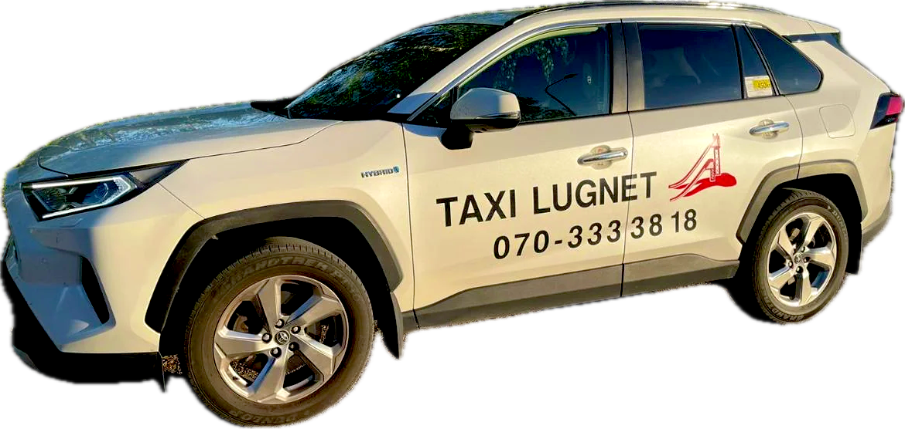
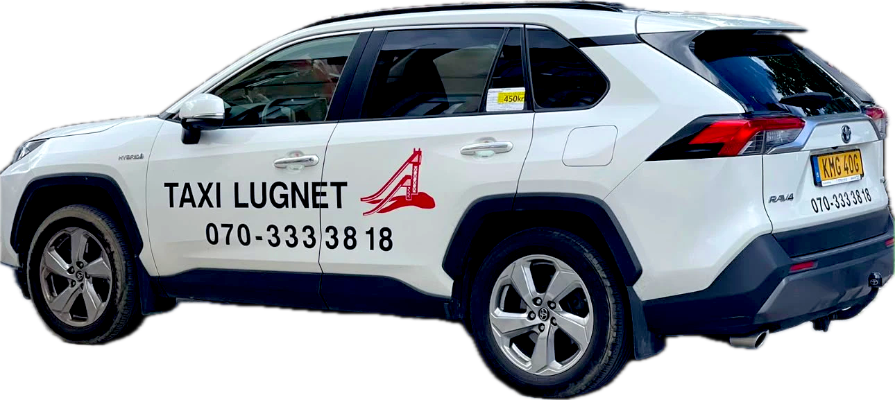

Taxi Lugnet
Din lokala taxi i Falun – när du behöver det. Ring oss direkt för snabb upphämtning.

Så enkelt är det
Inga appar, inga konton. Du ringer – vi kör.
Ring oss
Slå 070-333 38 18 och boka din resa.
Berätta vart
Säg var du står och vart du ska. Vill du åka senare bokar vi in en tid.
Vi hämtar dig
Vi är snabbt på plats. Kliv in, luta dig tillbaka och ta det lugnt.
Snabb upphämtning i hela Falun.

Bekvämt hela vägen
Vi bryr oss om din komfort. Därför kör vi en rymlig och modern SUV som är skön att åka i – oavsett om resan är kort eller lång.
- Gott om platsSköna säten och bra benutrymme för alla passagerare.
- Plats för bagagetStort bagageutrymme för resväskor, kassar och barnvagn.
- Tyst hybridbilMjuk och tyst gång – och bättre för miljön.
- Ren och fräschBilen hålls ren inför varje resa.
Kliv in och ta det lugnt.
Vi känner Falun utan och innan
Lokala taxiresor på dina villkor – alltid nära till hands. Vi hittar rätt direkt och tar den smidigaste vägen, så att du kommer fram i tid.
- Falun C
- Falu lasarett
- Lugnet
- Stora Torget
- Falu gruva
- Högskolan Dalarna
- Till och från jobbet
- Hem efter kvällen på stan
Vår logga är hoppbackarna i Lugnet – Faluns kändaste siluett. Ett tecken på att vi är äkta Falubor och kör för Falubor.